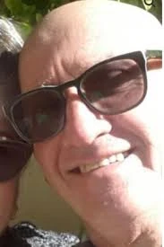

כפר עזה
שוורצמן דוד אלברטו ז"ל
איש חקלאות, השקיה, אירוח ומשפחה
סיפור חיים
דוד אלברטו שוורצמן ז״ל, בנם של פייגה ואברהם שמעון, נולד בפרגוואי שבדרום אמריקה בכ״ז באב תשט״ז, 4 באוגוסט 1956. הוא גדל והתחנך בפרגוואי, והיה חניך "תנועת הנוער הציוני".
בגיל 17 עלה דוד לישראל, ויחד עם חבריו לתנועה השתכן בקיבוץ עין השלושה. זמן קצר לאחר שהגיע ארצה הכיר את אורלי פינקו, בת הקיבוץ. השניים התאהבו והפכו לזוג. לימים גילו כי אביה של אורלי, שהיה שליח מטעם ישראל בפרגוואי, היה מי שסייע לדוד ולחבריו בתנועת הנוער לעלות לארץ.
כשהיה בן 19 נישא דוד לאורלי בטקס משותף עם זוג נוסף מהקיבוץ. כשהיה בן 21 נולד בנם הבכור יהונתן, ובהמשך נולדו רועי, עילי ודניאל.
את עבודתו בקיבוץ החל דוד ברפת, ולאחר מכן עבר לעבוד במטבח הקיבוץ. בזכות כישוריו הרבים מונה לאחראי על ניהול המשק, על קניית מוצרי המזון וחומרי הגלם ועל חלוקתם לתושבי הקיבוץ.
רועי, בנו, סיפר כי דוד נהנה מאוכל, ושהיה לו חשוב שכל החברות והחברים ייהנו לא פחות. האסאדו הדרום־אמריקאי שלו בימי רביעי היה לשם דבר בקיבוצי הסביבה.
עם השנים עבר דוד לעבוד בשדות הקיבוץ, והחל להתעניין יותר ויותר בתחום החקלאות. הוא למד את התחום לעומק, עד שהפך למומחה לחקלאות ולהשקיה. במסגרת עבודתו נשלח על ידי מש״ב, סוכנות הסיוע הלאומית של ישראל, למדינות רבות, ובהן הונדורס, ניקרגואה, אנגולה ואתיופיה. את עבודתו שילב בטיולים ובמפגש עם מקומות ואנשים חדשים.
בשנת 2002 עברו דוד ואורלי לקיבוץ כפר עזה שבנגב הצפוני, ובנו בו את ביתם. הם אהבו לארח, לבשל ולהסעיד את בני המשפחה ואת החברים הרבים - הוותיקים והחדשים.
עם השנים התרחבה המשפחה, וכשנולדו הנכדים לא היה מאושר ממנו. רועי סיפר כי דוד למד להכיר את החברים והחברות של כל נכד ונכדה, אהב לקחת אותם לגן, לאסוף אותם מבית הילדים ומהגן, ומצא דרך להיות סב אוהב גם לנכדים שגרו רחוק ממנו.
דניאל, בתו, סיפרה: ״אבא היה איש ענק עם לב ענק. האריה של המשפחה. תמיד נתן עצות, תמיד עזר, אף פעם לא השאיר אותנו לבד.״ היא סיפרה כמה אהב את נכדיו, לקח אותם לטיולים ולימי כיף, והגיע כמעט מדי יום לעזור איתם.
בשנותיו האחרונות שימש דוד כמנהל פרויקטים וכיועץ בענייני חקלאות, בעיקר במרכז אמריקה. הוא היה מוערך מאוד בעבודתו, נודע במקצועיותו, בחריצותו ובידע הרחב שלו, ואף היה שגריר של כבוד בהונדורס.
דוד ואורלי היו זוג אוהב ומחובר, הורים וסבים מעורבים ונוכחים. ביתם היה בית של משפחה, אוכל, חום, שמחה ואהבת אדם.
שבעה באוקטובר והימים שאחריו בערב 6 באוקטובר 2023 התכוננו דוד ואורלי לחגיגות יום ההולדת של נכדם, שהיו אמורות להתקיים למחרת.
בבוקר שבת, שמחת תורה תשפ״ד, 7 באוקטובר 2023, חדרו מחבלים לקיבוץ כפר עזה במסגרת מתקפת הטרור הרצחנית על יישובי עוטף עזה. עם תחילת האזעקות נכנסו דוד ואורלי לממ״ד, ושמרו על קשר עם ילדיהם.
בשיחתם האחרונה עם בנם רועי, בסביבות השעה 7:30, עדכנו כי מחבלים נכנסו לביתם וכי הבית החל לעלות באש. לפי עדויות המשפחה, מחבלים הציתו חלקים בביתם וירו בדוד ובאורלי למוות.
דוד אלברטו שוורצמן ואורלי פינקו־שוורצמן נרצחו בביתם בקיבוץ כפר עזה בכ״ב בתשרי תשפ״ד, 7 באוקטובר 2023. דוד היה בן 67 במותו.
דוד ואורלי הובאו תחילה למנוחות בבית העלמין בשפיים. בספטמבר 2025 הועברו למנוחת עולמים בבית העלמין בקיבוץ כפר עזה.
זיכרון ומילים מהלב על מצבתם של דוד ואורלי כתבו בני המשפחה: ״אהבו את האדם, את השדה ואת החיים.״
עילי, בנם, ספד להם וסיפר כי הבית שלהם היה המקום הכי חם ואוהב שקיים - בית של תמונות משפחה, ציורים, גאווה בילדים, דאגה ואהבה. הוא כתב כי הוריו לימדו את ילדיהם לאהוב ולכבד אחרים, והיו עבורם מקור של ביטחון, חום וגאווה.
מתי, חברו של דוד, ספד לו וסיפר כי דוד אמר לו לא פעם כמה הוא אוהב את כפר עזה, ושעל אף המתיחות הביטחונית ראה במקום גן עדן.
דניאל, בתו, תיארה את משפחת שוורצמן כ״משפחה דבק״ - משפחה קרובה מאוד, שמדברת כל הזמן, נפגשת כל שבת וחוגגת יחד כל אירוע. היא סיפרה על הורים נוכחים, מעורבים ואוהבים, שהיו אוויר לנשימה עבור ילדיהם ונכדיהם.
דוד נזכר כאיש גדול עם לב גדול; אדם של שדה, אוכל, משפחה ואהבת אדם. חקלאי בנשמתו, איש מקצוע מוערך, אב וסב מסור, בן זוג אוהב ואדם שתמיד ידע לעזור, לייעץ, לארח ולחבק.
זכרו של דוד, לצד זכרה של אורלי, נשאר בלב ילדיהם, נכדיהם, משפחתם, חבריהם וקהילת כפר עזה.